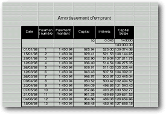

<!-- Documentation XQuad (c)1995-2000 AXENE contact axene@axene.org>
<html>

<head>
<title>Tableau de cellules</title>
</head>

<body BGCOLOR="#FFFFFF" BACKGROUND="Images/back.gif" TEXT="#000000">

<p ALIGN="right"> </p>

<p><br>
<br>
C'est dans le tableau de cellule que s'effectue les principales opérations d'XQuad. De
nombreuses fonctions agissent sur les cellules sélectionnées du tableau de cellule et la
cellule active sert de point d'entrée de nouvelle donnée. C'est également sur le
tableau de cellule que les cadres et graphiques viennent se superposés et peuvent y être
manipulés. <br>
<br>
</p>

<hr>

<p align="center"><br>
 <br>
<small><i>Photo d'écran&nbsp;: Tableau de cellules </i></small></p>

<p><br>
</p>

<hr>

<p><br>
</p>

<p>Sur le tableau de cellule, deux entités de types différents peuvent être
sélectionnées de façon exclusive: des régions de cellules ou des cadres. La sélection
des cadres permet leur manipulation. </p>

<p>La sélection des régions de cellules fait apparaître celles-ci en inversée vidéo.
La cellule active est <u>toujours</u> sélectionnée. C'est souvent la seule cellule
sélectionnée. Elle apparaît en vidéo normal avec une contour épais en inversé
vidéo. Ce sont les attributs de la cellule active qui définissent l'état des boutons
icônes des barres '<a HREF="HBar_Misc.html">Manipulations générales</a>', '<a HREF="HBar_Font.html">Changement de polices</a>', '<a HREF="HBar_Text.html">Manipulation
des textes</a>', '<a HREF="HBar_Ornament.html">Décoration des cellules</a>' et le contenu
de la <a HREF="Edit_Bar.html">barre d'édition</a>. </p>

<p><br>
</p>

<h3>Déplacement de la cellule active&nbsp;: </h3>

<p>Il est possible à tout moment de cliquer sur une cellule pour la faire devenir active.
On peut aussi la déplacer en utilisant les touches flèches du clavier et les touches '<tt>Page
Up</tt>' et '<tt>Page Down</tt>'. La vue de la feuille de calcul se décale
automatiquement lorsque l'on déplace la cellule active aux bords de la zone visible. </p>

<p>Le déplacement de la cellule active annule la sélection de cellule antérieure et
crée un nouvelle sélection réduite à la cellule active seule. </p>

<p>Lorsque l'on valide la contenu de la barre d'édition avec la touche '<tt>Return</tt>'
du pavé alphabétique du clavier, la cellule active se déplace d'une ligne vers le bas.
Si cette validation s'effectue quand plusieurs cellules sont sélectionnées, la cellule
active se déplace verticalement puis horizontalement à l'intérieur des régions de
cellules sélectionnées. </p>

<p><br>
<a NAME="select_region"></p>

<h3>Sélection des régions de cellules&nbsp;: </h3>
</a>

<p>On peut sélectionner une cellule simple juste en cliquant dessus. </p>

<p>Il est également possible de sélectionner une région rectangulaire de cellule. Pour
ce faire, il suffit de suivre les trois étapes suivantes: 

<ol>
  <li>cliquer sur une cellule en maintenant le bouton gauche de la souris enfoncé. </li>
  <li>déplacer la souris afin de former la région rectangulaire de cellule voulue. </li>
  <li>lâcher le bouton de la souris lorsque le curseur de la souris est au dessus de la
    cellule voulue. </li>
</ol>

<p>Si pendant l'étape 2 on click sur le bouton droit de la souris, la sélection en cours
est annulée. </p>

<p>Dans tous les moyens de sélectionner des cellules (sélection de colonnes et de lignes
entières, sélection simple, sélection de région rectangulaire), le fait de
sélectionner de nouvelles cellules annule la sélection précédente. Pour faire en sorte
de sélectionner plusieurs régions de cellules en même temps, il suffit de réaliser la
nouvelle sélection en maintenant la touche '<tt>Ctrl</tt>' enfoncée, ce qui évite de
perdre la sélection antérieure. </p>

<p>Pour élargir ou rétrécir une région de cellule déjà sélectionnée, il faut
maintenir la touche '<tt>Shift</tt>' (Majuscule) du clavier et élargir ou rétrécir la
région en utilisant les touches flèches du clavier (+ 'Page Up' et 'Page Down') ou
cliquer avec le bouton gauche de la souris sur une cellule (la nouvelle région s'étendra
de la cellule active à la nouvelle cellule cliquée). </p>

<p><br>
<a NAME="cut_copy_paste"></p>

<h3>Couper/Copier/Coller de région de cellules&nbsp;: </h3>
</a>

<p>Il est possible d'effectuer les opérations Copier/Couper/Coller directement depuis le
tableau de cellule. Ces opération ne peuvent se faire que si une seule région de cellule
(&nbsp;pas de multi-sélection avec la touche 'Ctrl' ni de sélection de colonnes ou de
lignes entières&nbsp;) est sélectionnée. </p>

<p>Il faut procéder de la manière suivante&nbsp;: 

<ol>
  <li>prendre la sélection en cliquant, sur le contour extérieur de la région rectangulaire
    sélectionnée, avec le bouton gauche de la souris maintenu enfoncé. </li>
  <li>déplacer la sélection avec la souris. Le tableau de cellule de décale automatiquement
    horizontalement ou verticalement lorsque le curseur souris est en dehors. </li>
  <li>déposer la sélection en lâchant le bouton de la souris. </li>
</ol>

<p>La méthode décrite permet d'effectuer un Couper/Coller. Pour faire un Copier/Coller
,il faut maintenir la touche 'Shift' du clavier maintenu pendant les étapes 2 et 3. </p>

<p>Au cours du déplacement de la sélection (&nbsp;étape 2&nbsp;), on peut cliquer sur
le bouton droit de la souris pour annuler toute l'opération. </p>

<p>Afin de facilité la prise de la sélection, le bouton du milieu de la souris peut
être préféré au bouton gauche. En effet l'utilisation du bouton du milieu ne rend pas
nécessaire de cliquer sur le contour de la sélection. Un click n'importe où à
l'intérieur du tableau de cellule avec ce bouton permet de débuter une opération
Couper/Coller sur la sélection. </p>

<p><br>
<a NAME="extend"></p>

<h3>Extension de séries de cellule&nbsp;: </h3>
</a>

<p>L'extension de série permet de ne pas à avoir à entrer manuellement des séries
logiques de valeurs. Par exemple, si on veut entrer dans une colonne des numéros de
série consécutifs, il est possible de n'entrer que les 2 premiers puis de les étendre
au reste de la colonne: les numéros seront incrémentés automatiquement. </p>

<p>Il est nécessaire, préalablement à une extension, d'entrer au moins les 2 premières
valeurs d'une série et de les sélectionnées. L'extension d'une seule valeur, de texte
ou de formule ne fait que recopier le contenu des cellules sélectionnées dans celles de
la région d'extension. </p>

<p>Les suites de valeurs numériques, de dates, d'heures, de jours dans la semaine, de
mois dans l'année... peuvent être étendues de façon arithmétique (&nbsp;incrément
constant&nbsp;) ou de façon géométrique (&nbsp;multiplicateur constant&nbsp;). Pour
l'extension de suite géométrique, il faut au moins 3 valeurs. </p>

<p>L'extension d'une séries nécessite préalablement qu'une seule région de cellule
soit sélectionnée (&nbsp;pas de multi-sélection avec la touche 'Ctrl' ni de sélection
de colonnes ou de lignes entières&nbsp;). Une extension peut se faire horizontalement ou
verticalement, mais pas les deux. Elle s'effectue de la façon suivante : 

<ol>
  <li>maintenir enfoncer la touche '<tt>Ctrl</tt>' du clavier au moins jusqu'à l'étape 3. </li>
  <li>prendre l'un des quatre bords du contour extérieur de la sélection de cellule grâce
    à un click prolongé sur le bouton gauche de la souris. En fonction de la direction de
    l'extension (&nbsp;vers la gauche, vers la droite, vers le haut, vers le bas&nbsp;), il
    faut choisir le bord du contour correspondant (&nbsp;bord gauche, droit, supérieur,
    inférieur respectivement). </li>
  <li>déplacer la souris dans la direction voulue de l'extension. Le tableau de cellule de
    décale automatiquement horizontalement ou verticalement lorsque le curseur souris est en
    dehors. </li>
  <li>relâcher le bouton de la souris, lorsque le curseur souris se trouve au-dessus de la
    cellule la plus extrême de la région d'extension. </li>
</ol>

<p>Un click sur le bouton droit lors de l'étape 3 permet d'annuler l'extension. </p>

<p><br>
<a NAME="insert"></p>

<h3>Insertion de lignes ou de colonnes&nbsp;: </h3>
</a>

<p>L'insertion de lignes ou de colonnes nécessite préalablement qu'une seule région de
cellule soit sélectionnée (&nbsp;pas de multi-sélection avec la touche 'Ctrl' ni de
sélection de colonnes ou de lignes entières&nbsp;). </p>

<p>L'insertion de lignes ne s'effectuera qu'au niveau des colonnes de la sélection et
l'insertion de colonnes ne s'effectuera qu'au niveau des lignes de la sélection. </p>

<p>L'insertion de lignes et de colonnes s'effectue de la même façon que l'extension de
série, excepté le fait qu'il faut maintenir à l'étape 1 la touche '<tt>Shift</tt>' au
lieu de la touche '<tt>Ctrl</tt>'. </p>

<p>Pour insérer des lignes, il faut étendre vers le haut ou vers le bas. Le nombre de
lignes de la zone d'extension indiquera le nombre de lignes à insérer. Etendre vers le
haut permet d'insérer les lignes avant la sélection, étendre vers le bas permet
d'insérer les lignes après la sélection. </p>

<p>Pour insérer des colonnes, il faut étendre vers la gauche ou vers la droite. Le
nombre de colonnes de la zone d'extension indiquera le nombre de colonnes à insérer.
Etendre vers la gauche permet d'insérer les colonnes avant la sélection, étendre vers
la droite permet d'insérer les colonnes après la sélection. </p>

<p><br>
</p>

<hr>

<p ALIGN="right"></p>
</body>
</html>
